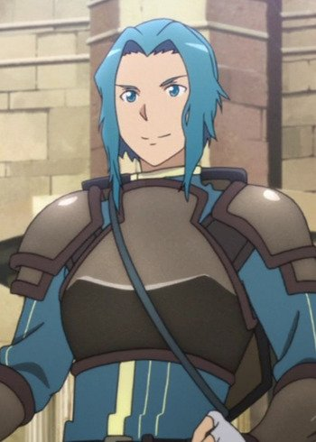
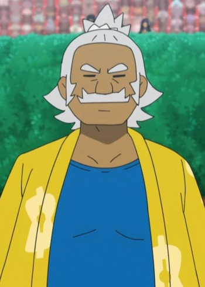
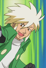
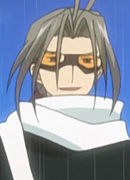

|  |
Diabel |
|
Diabel is one of the 10,000 players who trapped in Sword Art Online. He was one of the beta testers as well. He is a strong and natural leader, having led multiple raid group with tactics. He inspired players to clear the floors with his speeches. His dark side is that he with tried to use the situation to his advantage. |
|  |
Hala |
|
Hala is the Island Kahuna of Melemele Island and a member of Alola Elite Four. He specializeas in Fighting-type Pokemon. He is the grandfather of Hau. He is a carefree individual. He is respected for his knowledge, experience, and adherence to Alola traditions. People seek out advice from him. He holds his position of Island Kahuna with immense pride. |
 |
Jonathan |
- Pokemon Advanced Generations
|
Jonathan is a pediatrician in Fuchsia City with his wife Edna. He was thinking about becoming an actual docter for Pokemon. |
 |
Noland |
- Pokemon Advanced Generations
|
Noland is a member of the Kanto battle frontier. He enjoys inventing things and riding on the airplane that he made. Rather than battling with random Pokemon, Noland allows the opponent to choose who they will battle against. |
|  |
Palmer |
- Pokemon Diamond and Pearl
|
Palmer is the Frontier Brain of the Battle Tower. He is Barry's father and is from Twinleaf Town. |
|  |
Shougo |
- Tsubasa Chronicle
- Tsubasa Chronicle 2nd Series
|
Shougo is the leader of the 'goggle' gang, one of the bad gangs of the Hanshin Republic. His kudan is powerful and controls the element of water. |


.jpg)